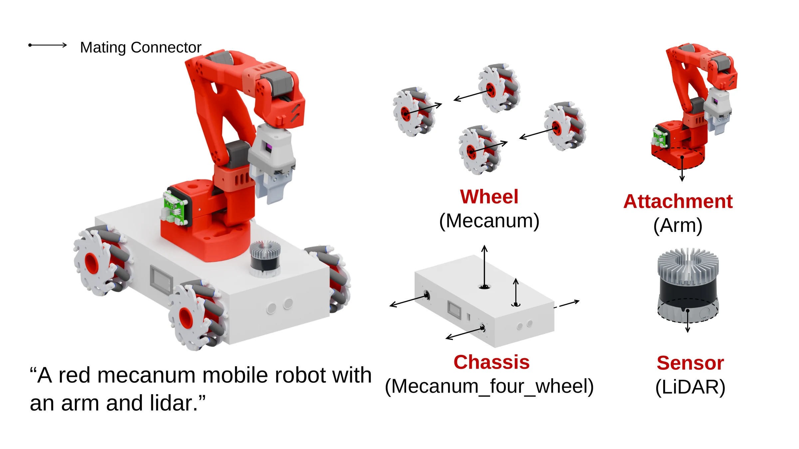

Discussions
Ask questions, share robot designs and follow announcements.
RobotDSL is a family of languages for robot development. One program describes the robot, its world, its behavior and how it is evaluated; a compiler assembles the machine, derives its settings and checks the whole system before anything runs. MobileDSL, for mobile robots, is the first language of the family.
Robot nav_bot { intent "A mecanum robot with a lidar and an arm" Mecanum_four_wheel chassis(ref = "silver") Mecanum wheel_lf(ref = "red", glue = (0.0976, 0.095, -0.0443, 0, 1, 0)) Mecanum wheel_lb(ref = "red", glue = (-0.1124, 0.095, -0.0443, 0, 1, 0)) Mecanum wheel_rf(ref = "red", glue = (0.0976, -0.095, -0.0443, 0, -1, 0)) Mecanum wheel_rb(ref = "red", glue = (-0.1124, -0.095, -0.0443, 0, -1, 0)) Lidar front_scan(ref = "lidar", glue = (0.11, -0.0001, -0.0043, 0, 0, -1)) Attachment top_arm(ref = "arm", glue = (-0.0073, -0.0001, -0.0043, 0, 0, -1))}
Loading the 3D model…

Execution success in simulation
Time per design
API cost per design
Execution success in simulation, MobileDSL vs. ROS/Gazebo files: Codex / gpt-5.6-sol 74% vs. 24% · Codex / gpt-6-astra 82% vs. 40% · Claude Code / claude-opus-4-8 64% vs. 22%.
Time per design: 4.8 vs. 12.2 min · 2.5 vs. 4.2 min · 4.5 vs. 9.5 min.
API cost per design: $0.55 vs. $1.41 · $0.87 vs. $1.29 · $1.49 vs. $2.96.
Navigating around corridor obstacles, with onboard RGB and depth on the right.
Ask questions, share robot designs and follow announcements.
Offer a product or a part of your own; after review it joins the shared library, credited to you.
Tell us when a generated design looks wrong or the site misbehaves.
@misc{robotdsl_mobilecopilot,
title = {MobileCopilot: A Domain-Specific Language Framework
for Agentic Mobile Robot Design},
author = {Akihisa Watanabe and Fang Jiawei and Zhiyang Dou and
Yuxin Ray Song and Zizhao Tong and Yunsheng Tian and
Minghao Guo and Benjamin Jones and Wojciech Matusik},
howpublished = {\url{https://robotdsl.csail.mit.edu/}}
}